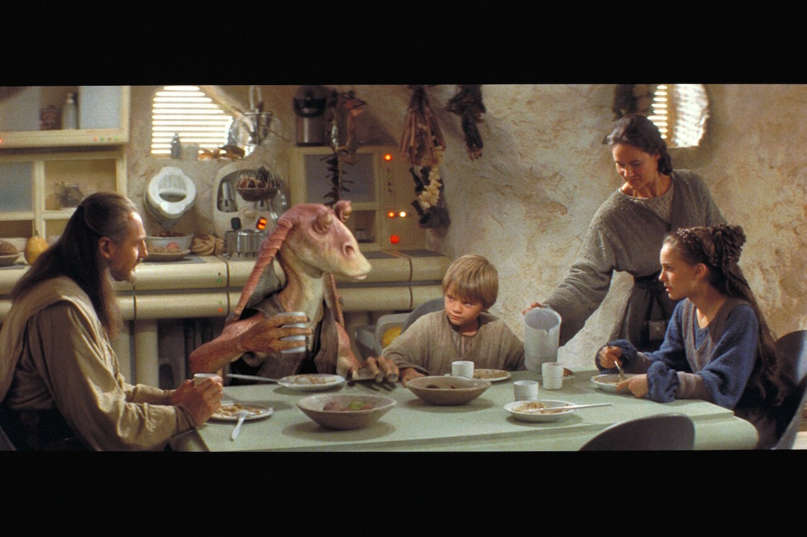
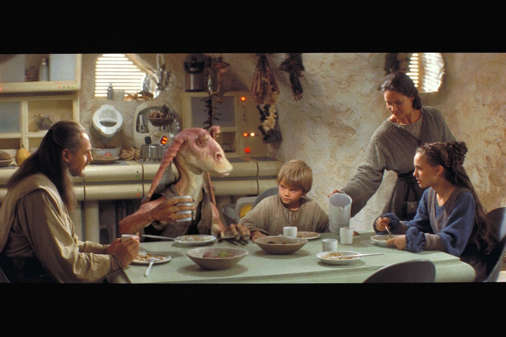
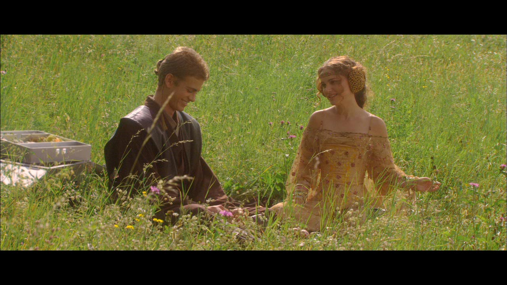

Born
Darth Vader was born Anakin Skywalker to Shmi Skywalker on the planet of Tattooine. 
Darth Vader was born Anakin Skywalker to Shmi Skywalker on the planet of Tattooine. 
Anakin and Shmi were slaves on Tatooine. Anakin was liberated by Qui-Gon Jinn and trained to be a jedi under Obi-Wan Kenobi.
Anakin Skywalker fell in love with Padme Amidala, whom he was assigned to protect as a Jedi apprentice. Padme and Anakin marry. When Padme falls pregnant, Anakin has visions of her dying in childbirth and fears that these visions are true. Palpatine (who turns out to be Darth Sidious) convinces Anakin that the power of the Dark Side would save Padme. 
Anakin Skywalker becomes Darth Vader and adopts a red light saber. Padme and Vader argue, he chokes her and she falls unconcious. Padme lives but gives birth to twins, Luke and Leia, and dies in childbirth. Obi-Wan and Vader duel. Vader is left for dead beside a lava flow. Palpatine rescues Vader, encases Vader in mechanical black armour to keep him alive and tells him that Padme died when she was strangled. Palpatine convinced Darth Vader to turn to the dark side at the age of 23.
Darth Vader is Emperor Palpatine's enforces and hunts the Rebels throughout the galaxy. He uses the Force choke on his own officers when they don't fall in line. Vader discovers that his son Luke Skywalker is alive and is a Rebel. Darth Vader reveals to Luke that Luke is his son ("No, I am your father" - The Empire Strikes Back). He cuts off Luke's right hand.
When Luke Skywalker is being struck with Force lightning by Emperor Palpatine, Vader saves Luke by killing Palpatine, but is mortally wounded in the process. He asks Luke to remove his helmet and they share a moment of reconciliation.
Darth Vader's daughter Leia had a son with Han Solo named Kylo Ren.
Darth Vader was voiced by James Earl Jones. In the prequel trilogy, Jake Lloyd plays Anakin Skywalker as a young boy and Hayden Christenson plays Anakin as he gets older. In the original trilogy, David Prowse plays the physical body of Darth Vader but when Vader's helmet is removed, Sebastian Shaw's face was used. Darth Vader's theme song is The Imperial March. Darth Vader only had 12 minutes of screen time in the first Star Wars movie (A New Hope).